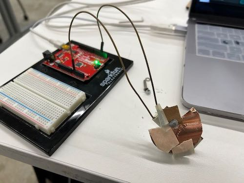
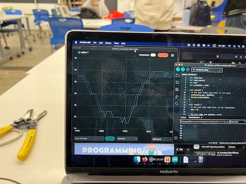

<div class="textcontainer">
<p class="margin"> </p>
<h3>Week 6: Electronic Inputs</h3>
<p class="margin"> </p>
<h4>Assignment: Build a Capacitive Sensor</h4>
This week we were tasked with creating a cirucit with a capacitive sensor.
<p class="margin"> </p>
<div class="flexrow">

</div>
<p class="caption">Capacitive Sensor.</p>
The other part of our assignment was to configure another sensor with an output device. The sensor I decided to use was the photo sensor and the output device was a simple LED. I went with this sensor because as a photographer I thought It would be cool to be able to see how much light is in an area. Digital cameras use this in order to know which settings to shoot in the camera. The schematic was simple since we learned in lab how to implement different sensors with Arduino. The most difficult part of this project was the programing and graphing the data points of the input. To graph the points I use Desmos. I plotted the input points on desmos and then took a screenshot of the points. The relationship indicitated that the sensor was not very consistant. Depsite using the similar flashlight settings on my phone I got different readings from the sensor. This indicates that there is a large margin of error on the sensor.
<p class="margin"> </p>
<div class="flexrow">
<img src="rotary_circuit.jpeg" alt="an Arduino circuit with light sensor">

</div>
<p class="caption">Left: Light input device with LED Right: Desmos graph of light readouts.</p>
</div>